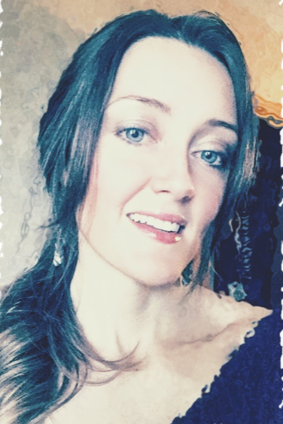
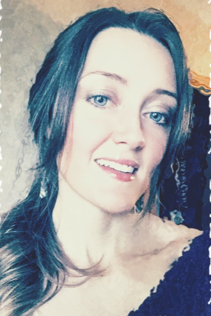

Julia Christensen
About Me
Born on (June 5th, 1982) I have lived in Omaha, NE my entire life, and besides some crazy winters I love it
here. I graduated from Plattsmouth High School and then attended Bellevue University to study Psychology.
I managed to get my foot in the door at Union pacific starting out as a contractor building our company PC’s.
I loved it, changed my degree to Information Technology and got my Associates degree from Metro Community College.
I have now been with Union Pacific for 10 years in my current position as an Associate Project Engineer. My current roll at
UP is working with any and every technical issue that someone can encounter. I would really like to become an
expert in a single area of technology which is why I applied for the Code for Good program. I enjoy helping and
working with people and would love the ability to make things easier for them to use. I have been
married for 6 Years to my husband Chad and we have two beautiful children Kayli is 5 and Cohen is 3.
“Don’t Let Yesterday Take Up Too Much Of Today.” – Will Rogers